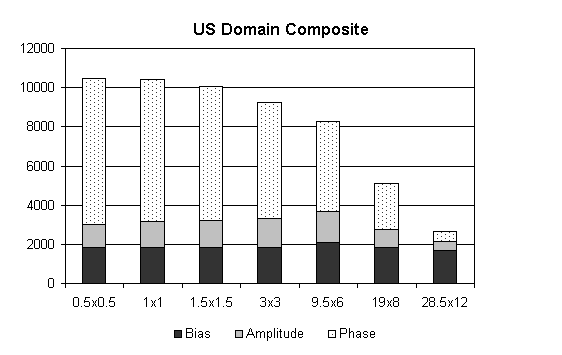
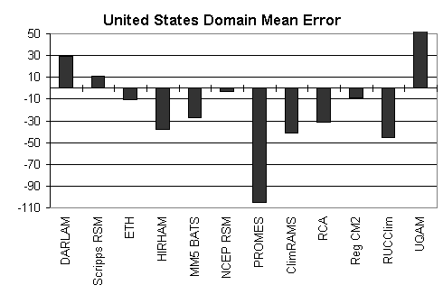

I have examined the scale dependence of precipitation errors averaged over the entire U.S. in PIRCS-Ib. The finest grid point spacing is 0.5x0.5 degrees. Coarser grid point spacing is emulated by averaging precipitation over all grid points within lat-lon squares. For example, by averaging over a square having edge-length equal to two gridpoints on each side (total of four grid points in average) I produced 1x1 degree spacing, averaging over all grid points in a square having three grid points on each side (9 total, 8 perimeter and 1 interior) gives 3x3 degree spacing, etc. Precipitation is accumulated over the two month period 1993 June-July.
Accuracy of the forecast field is determined by mean square error (MSE). Murphy and Winkler (1987, Monthly Weather Review) and Murphy (1995, Weather and Forecasting) show that MSE can be decomposed into three terms. The terms measure mean error, amplitude error, and position error. Mean error refers to an error applied uniformly across the field. Amplitude errors are those of the relative hi and low values within the domain (imagine the field as deviations from the domain mean). Position (or phase) error is the extent to which the contours of the fields are colocated.

I computed the composite MSE (12 models) by averaging each MSE term over the 12 models and then summing the average of the MSE terms. In the image above, I plotted the composite MSE and contribution by the average of each term for various scale categories (denoted as LONxLAT). The finest grid spacing produced 115 longitude x 48 latitude grid points (each box has 0.5 lon x 0.5 lat edges); the coarsest produced 2 longitude x 1 latitude grid points (each box has 28.5 lon x 12 lat). Notice that the area of the scale categories does not increase linearly, so that a linear appearance in the bar graph should not be interpreted as a linear trend with respect to scale.
When averaged over the entire U.S. the dominant source of error is position error. That is, correctly predicting the climatological position of storms is the most important factor in mesoscale error reduction for this experiment. As we would expect, position error decreases with increasing scale. However, appreciable reduction does not occur until precipitation has been averaged onto grid points spaced 3 lon x 3 lat. That suggests position errors less than this threshold might be considered random (I think). Notice that the term for ME changes slightly. If the domain included no missing values, then this term would be constant.
It should be noted that the Mean Error varies greatly from model to model, as illustrated below. While the tendency of the models considered as a group is to misrepresent the climatological position of precipitation, individual models might have error characteristics influenced more by bias or amplitude errors. For example, PROMES and UQAM contain greater bias, while the two RSMs contain little bias.

Changes in error characteristics by region are examined here.